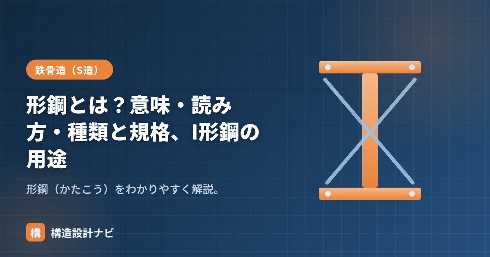

形鋼とは？意味・読み方・種類と規格、I形鋼の用途

形鋼（かたこう）とは、一定の断面形状にあらかじめ圧延・成形された棒状の鋼材です。鉄骨造の柱や梁は、この形鋼を組み合わせてつくられます。代表格がH形鋼で、そのほかにI形鋼・溝形鋼・山形鋼など、目的に応じた断面形状のバリエーションがあります。形鋼は「決まった形にあらかじめ成形されている」点が最大の特徴で、平鋼や鋼板を現場で切って組み立てるのに比べ、必要な断面性能を持つサイズを選ぶだけで済む効率の良さがあります。
- 形鋼は一定の断面形状に成形された鋼材。読み方は「かたこう」。
- H形鋼・I形鋼・溝形鋼・山形鋼などがあり、規格はJIS G 3192。
- 熱間圧延でつくられ、断面性能表から必要なサイズを選んで使う。
形鋼の意味と読み方
読み方は「かたこう」。あらかじめ決まった断面（H・I・L・溝など）に成形されているため、必要な断面性能を持つサイズを形鋼表から選ぶだけで使えます。英語では形状ごとに「H-section（H形鋼）」「channel（溝形鋼）」「angle（山形鋼）」のように呼び分けます。個々の記号・寸法表記の細かい読み方は「形鋼の読み方」で詳しく解説しています。
形鋼の製法
建築用の形鋼の多くは、赤熱した鋼片を何本ものロールに通して徐々に断面形状を成形していく熱間圧延という方法でつくられます。ロールの隙間形状を変えながら圧延することで、H形やI形といった複雑な断面を一体で成形できるのが特徴です。これに対し、薄い鋼板を常温でロール曲げ加工する冷間成形でつくる形鋼もあり、こちらは軽量形鋼と呼ばれ、母屋や胴縁など薄板でよい二次部材に使われます。同じ「形鋼」でも製法・板厚・用途が異なるため、図面や仕様書では区別して扱う必要があります。
形鋼の種類
| 種類 | 読み方・別名 | 主な用途 |
|---|---|---|
| H形鋼 | エイチがたこう | 柱・梁（鉄骨の主役） |
| I形鋼 | アイがたこう | クレーン走行梁・吊り材など |
| 溝形鋼 | みぞがたこう（チャンネル） | 母屋・胴縁・小梁 |
| 山形鋼 | やまがたこう（アングル・L形鋼） | ブレース・トラス・接合部材 |
| T形鋼・CT形鋼 | ティーがたこう | トラス弦材など |
規格
建築で使う熱間圧延形鋼の形状・寸法・質量・許容差はJIS G 3192（熱間圧延形鋼）で定められています。材質はSS400・SN材・SM材などを用います。同じJISの中でH形鋼・I形鋼・溝形鋼・山形鋼それぞれの標準寸法シリーズが定められているため、設計者は目的の断面性能を持つ系列・サイズを表から選定します。冷間成形の軽量形鋼は別規格（JIS G 3350）に定められている点も押さえておきましょう。
I形鋼の用途
I形鋼はフランジの内側に勾配（テーパー）がついた形鋼です。現在の建築ではフランジが平行で幅広いH形鋼が主流となり、I形鋼は次のような特定用途で使われます。
- クレーンの走行梁（ガーダー）やモノレールのレール梁。
- ホイスト・吊り用のレール。
I形鋼はH形鋼に比べてフランジ幅が狭く、横座屈に弱いため、一般の柱・梁にはH形鋼が選ばれます。I形鋼の形状や規格の詳細は「I形鋼とは」で個別に解説しています。
実務での選び方
形鋼を選ぶときは、まず必要な断面二次モーメント・断面係数を計算し、それを満たす断面を鋼材ハンドブックの表から探すのが基本の流れです。柱・梁などの主要構造部材にはH形鋼、母屋・胴縁などの二次部材には軽量形鋼、ブレースには山形鋼というように、部材の役割によって選ぶ形鋼の種類も変わります。
断面計算上は理想的なサイズでも、流通在庫が薄いロットだと納期が延びて工程を圧迫します。設計段階で形鋼表を見るときは、断面性能だけでなく標準的に出回っているサイズかどうかも合わせて確認する癖をつけています。
各形鋼の読み方は「形鋼の読み方」、薄板の形鋼は「軽量形鋼」、断面性能は「断面二次モーメントとは？」をどうぞ。
主な形鋼の断面（図解）
H形鋼とI形鋼はどこが違うのか
| H形鋼 | I形鋼 | |
|---|---|---|
| フランジ内面 | 平行 | 内側に向かって傾斜（テーパー） |
| ボルト接合 | 座金が密着し容易 | テーパー座金が必要でやりにくい |
| フランジ幅 | 広い（せいと同寸のものもある） | 相対的に狭い |
| 断面性能 | 効率が良い | 同じ重量ではH形鋼に劣る |
| 現在の使われ方 | 建築の柱・梁の標準 | クレーンレール・既存建物の改修など |
かつては圧延技術の制約からI形鋼が主流でしたが、フランジ内面を平行に圧延できるようになってH形鋼が普及し、現在では建築用の形鋼といえばH形鋼を指します。ただし既存建物の改修や耐震診断では、図面に「I-300×130」のようなI形鋼の表記が出てくることがあり、その場合は当時の断面性能表を参照する必要があります。
発注・積算での基礎知識
鉄骨のコストは、断面の種類ではなく総重量（トン単価）で決まるのが基本です。同じ性能を満たすなら軽い断面を選ぶほど安くなります。ただし例外もあり、①流通量の少ないサイズは割高、②断面の種類を減らすと施工・管理が楽でトータルは安い、③加工手間（孔あけ・溶接）が多い部材は重量以上にコストがかかる、といった要素が絡みます。設計では断面の種類を絞りつつ、必要な性能を満たす最軽量の断面を選ぶのがセオリーです。
また、形鋼には定尺（ていじゃく）という標準的な長さがあり、一般に6m・12mが流通しています。これを超える長さや中途半端な長さは、切断ロスや継手が発生して割高になります。スパン割りを決める段階で定尺を意識すると、材料ロスの少ない計画になります。
よくある質問
Q1. 形鋼とはどういう鋼材ですか？
あらかじめ一定の断面形状に圧延・成形された棒状の鋼材のことです。H形鋼・I形鋼・溝形鋼・山形鋼・T形鋼などがあり、鉄骨造の柱や梁はこれらを組み合わせてつくります。板から現場で組み立てるのではなく、既製の形状をそのまま使えるのが最大の利点です。
Q2. 形鋼の読み方は「かたこう」で合っていますか？
はい、「かたこう」と読みます。「けいこう」と読まれることもありますが、実務では「かたこう」が一般的です。H形鋼は「エイチがたこう」、山形鋼は「やまがたこう（アングル）」と呼びます。
Q3. I形鋼は今でも使われていますか？
建築の主要構造部ではほとんど使われず、H形鋼に置き換わっています。ただしクレーンの走行レール（走行桁）や、既存建物の改修・耐震診断では今も登場します。図面にI形鋼が出てきたときは、当時の断面性能表で数値を確認してください。
まとめ
- 形鋼（かたこう）は一定の断面形状に成形された鋼材。鉄骨の柱・梁に使う。
- H形鋼・I形鋼・溝形鋼・山形鋼などがあり、規格はJIS G 3192。
- 熱間圧延でつくる形鋼と、薄板を冷間成形する軽量形鋼は製法・規格が異なる。
- I形鋼はフランジに勾配があり、現在はクレーン走行梁など特定用途で使われる。